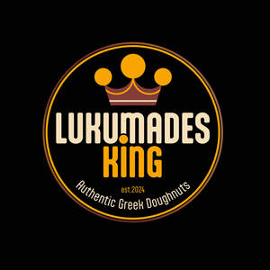

Trade Mark Journal No.2025/027 4 July 2025
UK00004222582 22 June 2025 (30,43)

- Class 30
- Doughnuts; Flour for doughnuts; Pastries, cakes, tarts and biscuits (cookies); Sopapillas [fried pastries]; Doughnut mixes; Chocolate-based fillings for cakes and pies; Chocolate pastries; Flapjacks [griddle cakes]; Custard-based fillings for cakes and pies; Ice-cream cakes; Pastries; Pancakes; Iced cakes; Iced fruit cakes; Chocolate waffles; Cupcakes; Dough for cakes; Chocolate biscuits; Fried dough cookies; Savory pastries; Cakes; Instant doughnut mixes; Pies; Flapjacks; Churros; Salted biscuits; Chocolate brownies; Waffles; Frozen pancakes; Frozen pastries; Cream cakes; Danish pastries; Custards [baked desserts]; Chocolate desserts; Chocolate decorations for cakes; Brownies; Pastries with fruit; Fruit pastries; Cream pies; Prepared desserts [pastries]; Chocolate covered cakes; Biscuits; Muffins; Fruit cakes; Macaroons [pastry]; Almond pastries; Scones; Chocolate sweets; Croissants; Chocolate fillings for bakery products; Fruit pies; Pastries filled with fruit; Muesli desserts; Chocolate for toppings; Fresh pies; Tea cakes; Chocolate coated biscuits; Icing for cakes; Cheese-flavored biscuits; Iced sponge cakes; Chocolate covered biscuits; Milk chocolate teacakes; Breakfast cake; Chocolate for confectionery and bread; Shortbread biscuits; Frozen yogurt cakes; Flavorings for cakes; Frozen cakes; Pancake syrup; Chocolate topped pretzels; Buns; Vegan cakes; Chocolate candy with fillings; Chocolate confections; Sweets (Non-medicated -) in the nature of chocolate eclairs; Ice cream cakes; Candy decorations for cakes; Eclairs; Biscuits having a chocolate flavoured coating; Biscuits having a chocolate coating; Chocolate syrups; Chocolate covered wafer biscuits; Cake dough; Half covered chocolate biscuits; Pretzels; Rolled wafers [biscuits]; Wafers [biscuits]; Frozen waffles.
- Class 43
- Catering; Catering services; Mobile catering; Outside catering; Catering of food and drinks; Providing food and drink catering services for fair and exhibition facilities; Providing restaurant services; Restaurant services; Self-service restaurant services; Fast-food restaurant services; Mobile restaurant services; Take-away food services; Restaurant and bar services; Bar and restaurant services; Takeaway food services; Providing food and drink for guests in restaurants; Restaurant services for the provision of fast food; Corporate hospitality (provision of food and drink); Food preparation services; Arranging of wedding receptions [food and drink]; Hospitality services [food and drink]; Snack-bar services; Services for providing food and drink.
Lukumades King Ltd